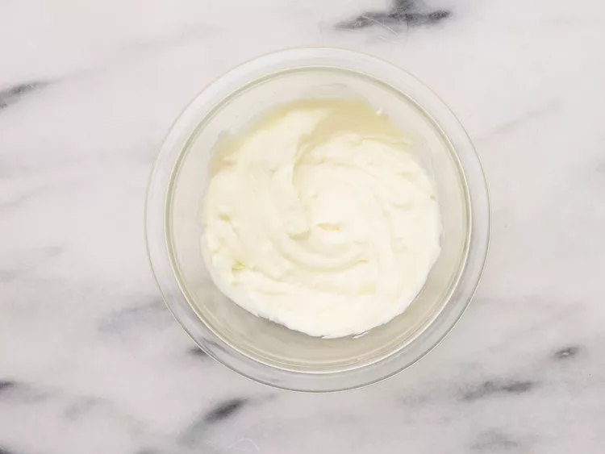

Have you ever felt your arteries are to clear? Blood flowing to well? With this sandwich, worry no longer. Melt in your mouth steak, grilled onions and peppers, and about a pound of cheese on a hoagie roll with garlic mayo spread, we will make sure that every. artery. clogs.
Gather all ingredients.
Combine mayonnaise and minced garlic in a small bowl. Cover and refrigerate. Preheat the oven to 500 degrees F (260 degrees C).
Heat oil in a large skillet over medium heat. Sauté beef until lightly browned.
Stir in bell peppers and onions and season with salt and pepper. Sauté until vegetables are tender, then remove from heat
Spread each bun generously with garlic mayonnaise.
Divide beef mixture into buns. Top with shredded cheese and sprinkle with oregano.
Place sandwiches on a baking pan.
Heat sandwiches in the preheated oven until cheese is melted or slightly browned.